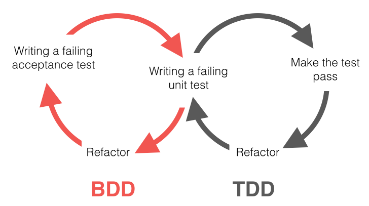

Mis on Behavior-driven development?
Behavior-Driven Development (BDD) on tarkvaraarendusmeetod, mis keskendub süsteemi käitumise määratlemisele lihtsas ja arusaadavas vormingus. Selle meetodi eesmärk on parandada suhtlust tehniliste ja mitte-tehniliste osapoolte vahel, võimaldades ärinõuete selget määratlemist ja testide kirjutamist, mis põhinevad äriloogikal ja kasutajate ootustel. BDD kasutab spetsiaalseid vorminguid (nt Gherkin) stsenaariumite kirjeldamiseks loomulikus keeles, mida mõistavad nii arendajad, testijad kui ka äripoole esindajad. Iga stsenaarium koosneb eeldustest, toimingutest ja oodatavatest tulemustest.

Behavior-driven development eelised ja puudused
Eelised:
- Parandab suhtlust: BDD ühendab tehnilised ja äripoole osapooled, lihtsustades suhtlemist.
- Selged nõuded: Stsenaariumid on konkreetsed ja arusaadavad kõigile osapooltele.
- Automaatne dokumentatsioon: Stsenaariumid toimivad elava dokumentatsioonina, mis uuendub arenduse käigus.
- Ennetab vigu: Selged stsenaariumid aitavad tuvastada ja vältida mitmetimõistetavust.
Puudused:
- Algne ajainvesteering: Stsenaariumite loomine ja automatiseerimine võib olla aeganõudev.
- Kõrge õppimiskõver: Gherkini ja automatiseeritud testide integreerimine võib vajada algkoolitust.
- Piirangud keerulistes projektides: Väga keerulised süsteemid võivad vajada täiendavaid lähenemisviise.
Näide vahendist: Cucumber
Cucumber on üks kõige populaarsemaid BDD tööriistu, mis võimaldab:
- Gherkini kasutamine: Kirjutada äripoolele arusaadavaid stsenaariume.
- Automatiseerimine: Luua stsenaariumitest automatiseeritud testid, mida saab käivitada erinevates programmeerimiskeeltes.
- Integratsioon: Toetab CI/CD töövooge ja ühildub teiste testimisraamistikega (nt Selenium).